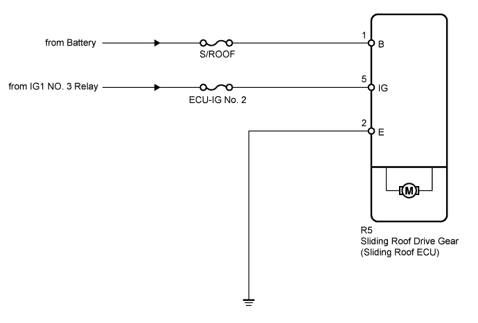
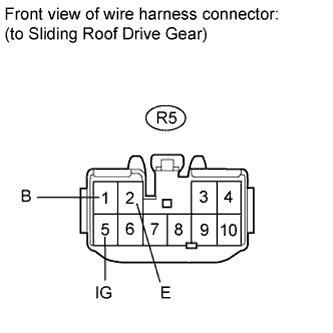

SLIDING ROOF SYSTEM > Sliding Roof ECU Power Source Circuit |

| 1.READ VALUE USING INTELLIGENT TESTER (IGNITION SWITCH SIGNAL) |
Use the Data List to check if the ignition switch signal is functioning properly (Click here).
| Tester Display | Test Part | Control Range | Diagnostic Note |
| Ignition (MPX) | Ignition switch signal (MPX signal)/ON or OFF | ON: Engine switch on (IG) OFF: Engine switch off | - |
| Ignition (Direct Signal) | Ignition switch signal/ON or OFF | ON: Engine switch on (IG) OFF: Engine switch off | - |
|
| ||||
| OK | ||
| ||
| 2.INSPECT FUSE (S/ROOF, ECU-IG NO. 2) |
Remove the S/ROOF and ECU-IG NO. 2 fuses from the main body ECU.
Measure the resistance according to the value(s) in the table below.
| Tester Connection | Condition | Specified Condition |
| S/ROOF fuse | Always | Below 1 Ω |
| ECU-IG NO. 2 fuse | Always | Below 1 Ω |
|
| ||||
| OK | |
| 3.CHECK HARNESS AND CONNECTOR (SLIDING ROOF DRIVE GEAR - BATTERY AND BODY GROUND) |
 |
Disconnect the R5 drive gear connector.
Measure the resistance and voltage according to the value(s) in the table below.
| Tester Connection | Condition | Specified Condition |
| R5-2 (E) - Body ground | Always | Below 1 Ω |
| Tester Connection | Switch Condition | Specified Condition |
| R5-1 (B) - Body ground | Always | 11 to 14 V |
| R5-5 (IG) - Body ground | Engine switch off | Below 1 V |
| R5-5 (IG) - Body ground | Engine switch on (IG) | 11 to 14 V |
|
| ||||
| OK | ||
| ||